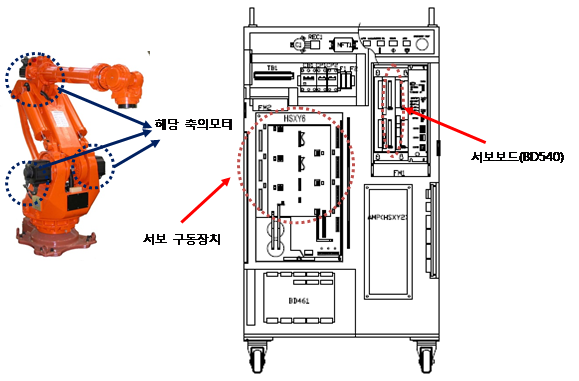

브레이크 해제와 동시에 로봇축이 낙하할 가능성이 있으므로 주의하십시오.
17.1. 개요
위치(속도)편차가 설정치 보다 큽니다. 서보제어에 의한 로봇 동작 중 이동명령위치와 실제위치와의 차이가 너무 큰 경우, 서보보드는 서보연산 중 에러를 감지하고 로봇을 정지시킵니다.
17.2. 원인 및 점검방법
1. 에러가 발생한 축이 다른 설비와 기계적 간섭이 있는지 확인하십시오.
로봇의 기구적 간섭 혹은 충돌이 있을 경우 이 에러가 발생할 수 있습니다. 제한영역을 벗어나 있을 경우에는 수동조작하여 안전영역으로 로봇을 이동시켜야 합니다.
2. 브레이크 해제가 정상적으로 작동되는지 확인하십시오.
해당 축 브레이크의 해제기능에 문제가 있거나 브레이크 해제전압의 이상일 수 있습니다.
1) 개별 축 브레이크 해제 이상 점검
모터전원을 제거한 후(모터OFF) 브레이크 수동스위치를 사용하여 해당 축의 브레이크가 해제되는지 확인하십시오. 브레이크 해제시 모터에서 나는 소리로 확인할 수 있습니다.
|
경고(Warning) 브레이크 해제와 동시에 로봇축이 낙하할 가능성이 있으므로 주의하십시오. |

3. 배선상태를 점검하십시오.
모터배선(U, V, W상)이 다른 배선 또는 접지선(FG)과 단락되어 있는지 확인하십시오.
4. 정격부하를 사용하지는 확인하십시오.
작업물을 포함하여 전체무게가 정격부하를 초과하고 있다면 해당 로봇의 사양서를 참조하여 정격 이내로 부하를 조정하십시오.
5. 위치편차 설정 레벨 오류
위치편차 설정치가 다음의 측정치 보다 작으면 설정치를 상향조정 하십시오.
수 싸이클 이상 동작시킨 후의 위치편차 측정값x1.5
6. 기타의 부품을 교체하십시오.
서보보드(BD540/1) à 서보 구동장치 à 모터의 순으로 교체하여 에러발생 여부를 확인하십시오.
